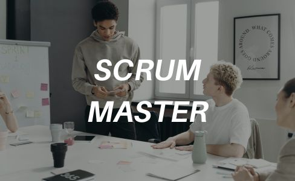

CERTIFICACIÓN SCRUM MASTER

acilitador del equipo: El Scrum Master actúa como un facilitador, ayudando al equipo Scrum a comprender y adoptar las prácticas y valores de Scrum. Facilita reuniones, eventos y procesos para garantizar que el equipo esté alineado y trabajando de manera efectiva.
Protector del equipo
El Scrum Master protege al equipo Scrum de distracciones externas y problemas que puedan afectar su capacidad para entregar valor de manera consistente. Ayuda a eliminar obstáculos y a mantener un entorno de trabajo seguro y productivo.
Coach del equipo: El Scrum Master trabaja como un coach para el equipo Scrum, ayudándoles a mejorar continuamente su desempeño y a aplicar los principios ágiles en su trabajo. Proporciona orientación y retroalimentación para fomentar el crecimiento y el desarrollo del equipo.
Promotor del cambio: El Scrum Master promueve una cultura de mejora continua dentro del equipo y la organización. Busca oportunidades para introducir cambios positivos y fomentar la innovación, siempre buscando formas de optimizar el proceso y aumentar la eficiencia.
- Facilitación de eventos de Scrum: Organización y conducción de reuniones para seguir metodología ágil.
- Eliminación de obstáculos: Resolución rápida de problemas que obstaculizan el progreso del equipo.
- Coaching y mentoring: Orientación para mejorar habilidades y aplicar principios de Scrum.
- Promoción de la autonomía del equipo: Empoderamiento para tomar decisiones y resolver problemas de forma autónoma.
- Gestión de conflictos: Mediación para resolver disputas y mantener ambiente colaborativo.
- Apoyo en la estimación y planificación: Ayuda en la evaluación del esfuerzo requerido y la planificación.